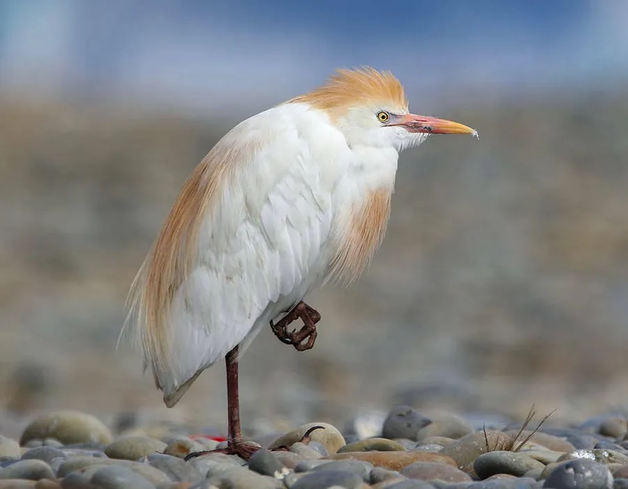

鸟类 · 动物界
牛背鹭 Bubulcus ibis

常在牛背和象群周围活动的白色鹭类，繁殖期头颈会染成橙黄色，主要靠捕食被牲畜惊起的昆虫为生。
- 分类
- 门脊索动物门纲鸟纲目鹈形目科鹭科属牛背鹭属
- 栖息环境
- 草地、农田、牧场、湿地与村庄附近，常跟随牲畜活动
- 地理分布
- 全球热带和亚热带广泛分布，中国南方和北方均有记录
- 保护级别
- IUCN 无危（LC）；中国“三有”保护动物
物种志
牛背鹭体长 46–56 cm，翼展 88–96 cm，体重 270–460 g。非繁殖期全身羽毛白色，喙黄色，腿黄褐色；繁殖期头顶、颈部和背部会长出橙黄色的饰羽，颜色十分醒目。它的体形比白鹭稍矮壮，颈部较短，常站在牲畜背上或草地上。
牛背鹭广泛分布于全球热带、亚热带和温带地区，中国南方和北方都有分布，部分种群有迁徙行为。它们喜欢在草地、农田、牧场和湿地活动，常跟随牛、水牛等牲畜，捕食被惊起的昆虫、蚱蜢和蛙类。繁殖期在水边树上集群营巢，每窝产卵 3–5 枚，孵化 21–24 天。牛背鹭适应力强，目前被列为无危物种，中国将其列入“三有”保护名录。
形态与习性
- 食性昆虫、蚱蜢、蛙类和小鱼
- 体长46–56 cm
- 翼展88–96 cm
- 体重270–460 g
- 繁殖每窝 3–5 枚卵，孵化 21–24 天
- 寿命野外约 10 年
趣味知识
- 牛背鹭常站在牛背上，捕食被牲畜走动时惊起的昆虫。
- 繁殖期它的头颈会染成橙黄色，与非繁殖期的白色差别很大。
- 牛背鹭会与其它鹭类混群营巢，形成热闹的鹭鸟林。